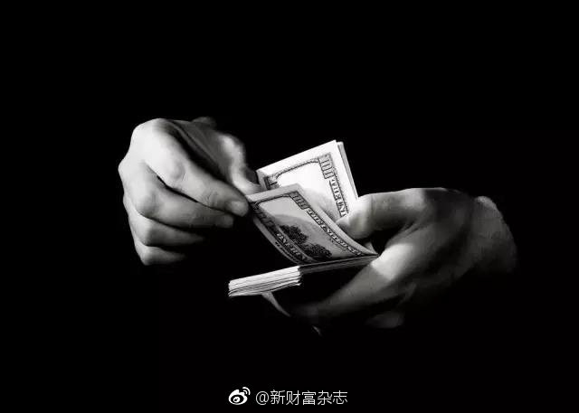

朋友知道我做医美行业，转发这篇文章给我看。怎么说呢，这些黑幕，行内人都知道已久，但现状改变并不大。我觉得最能做的就是对患者加强科普教育，但还是要通过这些吸血般中介去做整形的，只能说，收的是智商税吧，不相信专业医生，却相信所谓的同乡或者好友。
@新财富杂志:
【医美中介江湖：夜场起家，帮派暗战，有人洗白上岸，有人离乡潜逃】最近的医美中介圈人心惶惶。就在8月9日，深圳晚报发出新闻，深圳南山警方破获一起“美容贷款诈骗案”。“抓了5个人，涉及200万”，这条消息在中介圈迅速流传，人人自危——他们一直以为自己在钻法律空子，却发现这是一场刀尖舞蹈。其实行业摇摇欲坠的信号，早在一个月前就已发出——就是从北京区大中介卓小宝的逃亡开始…… 医美中介江湖：夜场起家，帮派暗战，有人洗白上岸，有人离乡潜逃
医美中介江湖：夜场起家，帮派暗战，有人洗白上岸，有人离乡潜逃
- 